The watch for runners
Designed specifically for runners, Under Armour and Samsung released a connected smartwatch in 2019 that paired directly with smart running shoes, giving athletes highly-accurate, real-time data and coaching during runs.
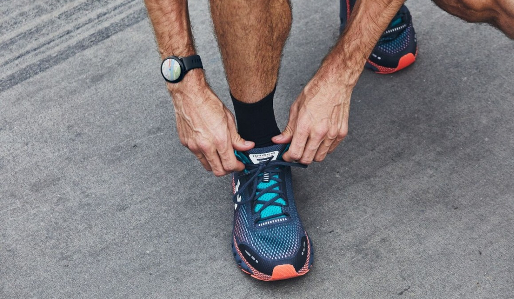
The Galaxy Watch Active2 Under Armour Edition, paired with UA's connected running shoes
Aiming for the ultimate connected coaching experience
MapMyRun on the watch was meant to be experienced while running — and sometimes while running fast. Our goal was to get you connected and going, focusing on the small interactions and indicators that let you know you were good-to-go. We wanted the watch to auto-detect your shoes, and allow you to quickly choose your specific activity, offering form and fitness coaching on your first run. Launch the app, press START, and go.
We wanted continuous scanning so your shoes were always in-sync, data-smoothing so we didn't over-coach on every little bump in the road, and easy syncing so you never lost sight of your goals. The only way to make it work so seamlessly was to build our own watch together. What started as a software project quickly scaled up to a co-developed, co-branded Galaxy Watch Active2 Under Armour Edition — announced at Samsung's Unpacked developer conference in August of 2019, and released in October of the same year.
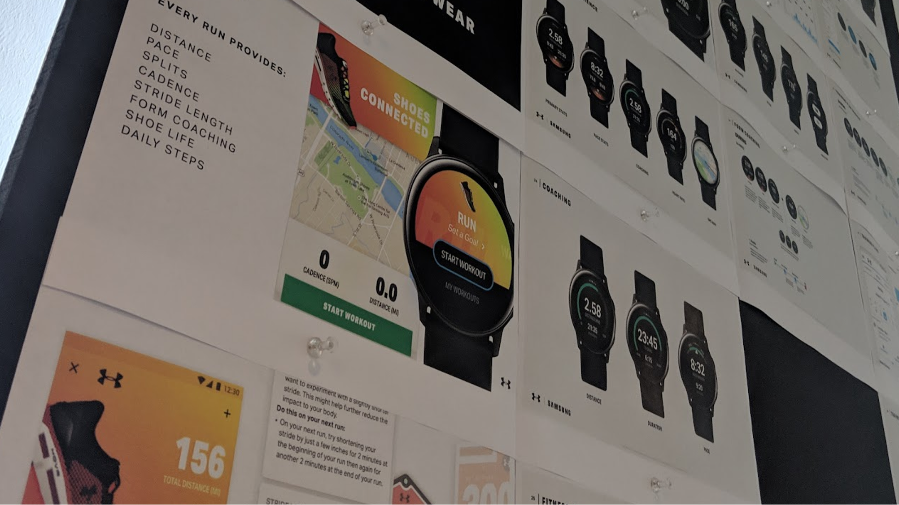
Early concepting — printed screen flows pinned to the wall
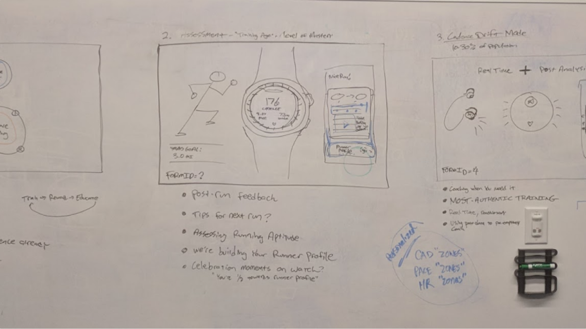
Whiteboard session — mapping the coaching and assessment flow
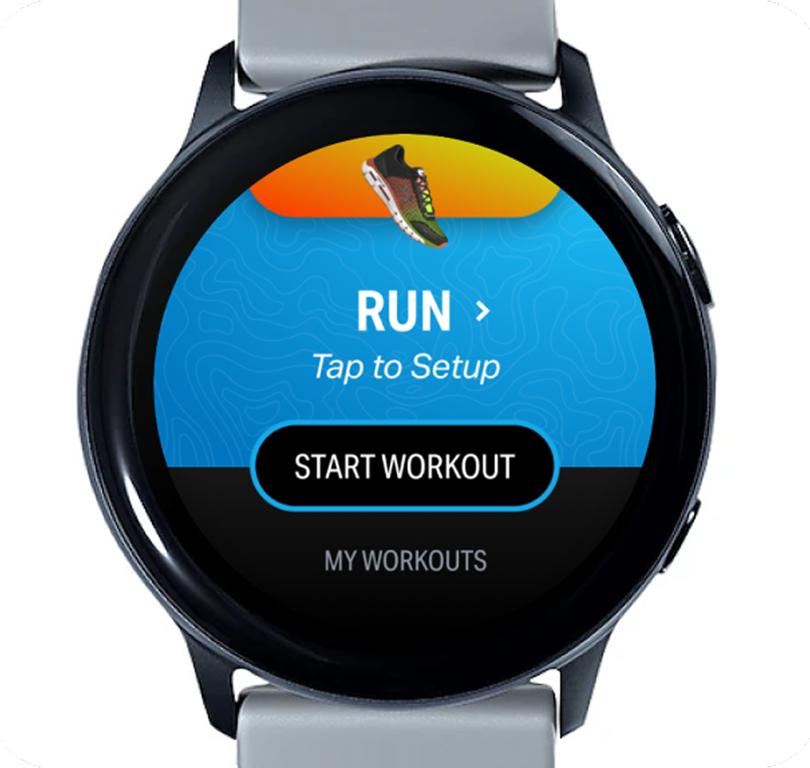
Run setup — tap to start once your shoes are connected
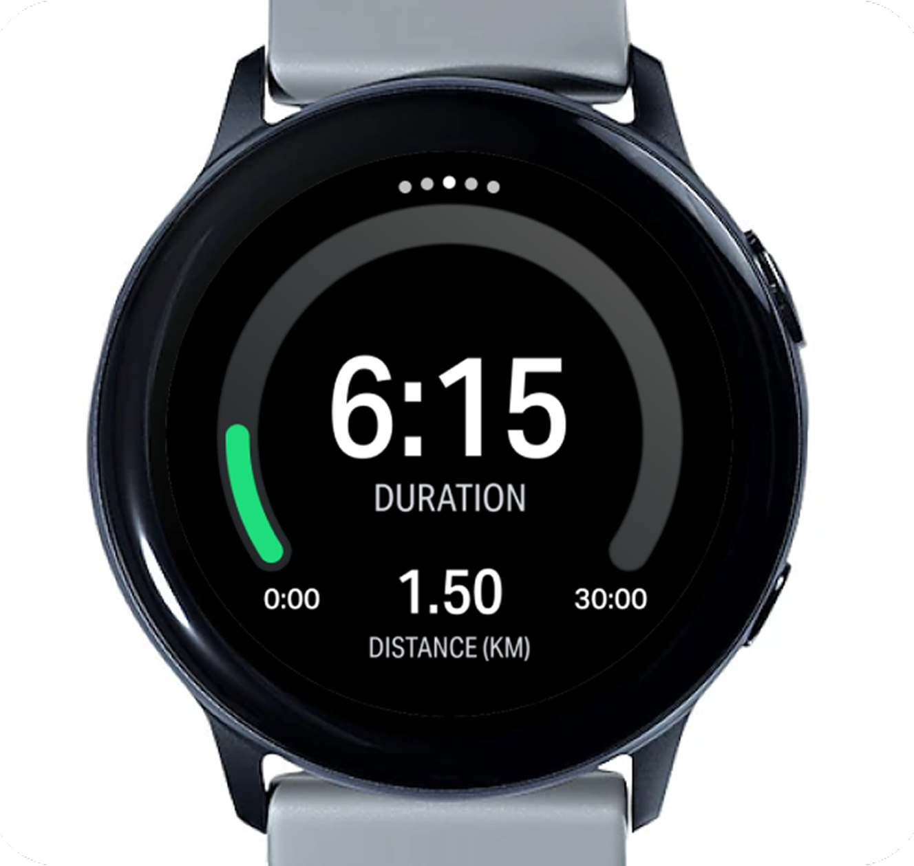
In-workout — duration and distance
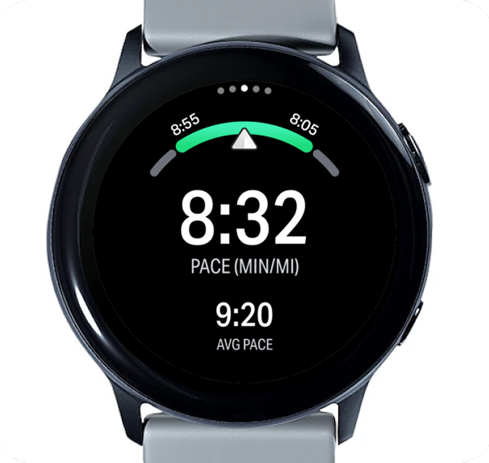
In-workout — pace and average pace
Hardware is only as good as the software that powers it
We worked very closely with Samsung's device engineers to develop the data sensors on the Galaxy Watch Active2. Engineers and product managers from Korea would often travel to our Austin, TX facility to work with our device engineers and exercise scientists to fine-tune the device's heart rate, GPS and accelerometer. This was an amazing opportunity to optimize our data sampling and coaching experience, giving us the ability to provide incredibly responsive tips and updates while running.
Multiple testing sessions resulted in the most-accurate consumer-level fitness tracking device available at the time - more accurate in counting strides and calculating pace and distance than Garmin, Apple Watch and Fitbit. As device and engineering teams worked on the hardware integrations, I kicked off visioning for the MapMyRun experience — including the connected footwear sync and form-coaching feature.
Systems-led design
I built out our own Samsung UI Kit for the MapMyRun app on the Galaxy Watch, hoping to leverage Samsung's OneUI design system for the overall look and feel — only introducing custom elements when necessary. Using the inherent system UI for the basics meant users weren't forced to learn new interactions and UI elements while mid-run. Our buttons were the same size, shape and position as the system OS buttons; our transitions followed the system UX, doing exactly what you expected when you interacted with them. This allowed us to build out basic versions of the entire app quickly, freeing up time to focus on the unique moments where Under Armour and MapMyRun could shine.

UI Kit for MapMyRun on the Samsung Galaxy Watch
Documenting the experience for stakeholder alignment
Our components provided teams with consistency in their interfaces. Buttons were aligned, actions were consistent. We used a comprehensive set of standard components like tags, drop-down, cards, switches, input fields and more. We only added custom components after a rigorous vetting process to determine if they belonged in the system or remained one-offs within the specific application that introduced them.
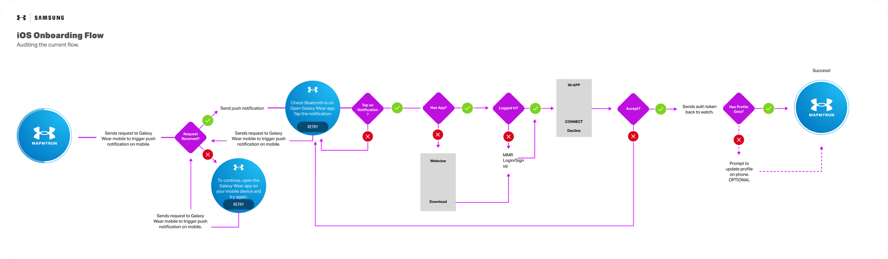
iOS onboarding flow — auditing the pairing and login experience
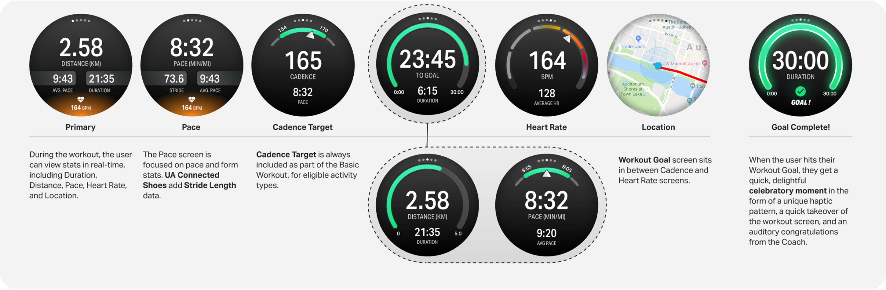
In-workout screen states, annotated for engineering handoff
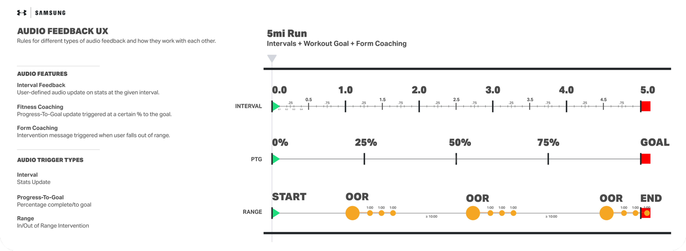
Audio feedback UX — rules for interval, goal, and range coaching cues
Keeping the runner motivated
One of our primary principles was to always celebrate the athlete, no matter their goal or performance. You could be aiming for your first mile or your fastest pace, and we'd cheer you on the entire time just for trying. The Progress-to-Goal interface used a hi-viz green gauge and big bold stats, keeping you motivated and informed throughout your run.
The Pace and Form Coaching gauge only alerted you when you fell outside a generously wide range from your stated goal — using gentle haptics, minimal negative feedback, and incredibly useful coaching tips to get you back on track. Hitting your distance or duration goal triggered a brief celebratory moment, then went right back to tracking and coaching, allowing you to keep going if you felt the motivation to.
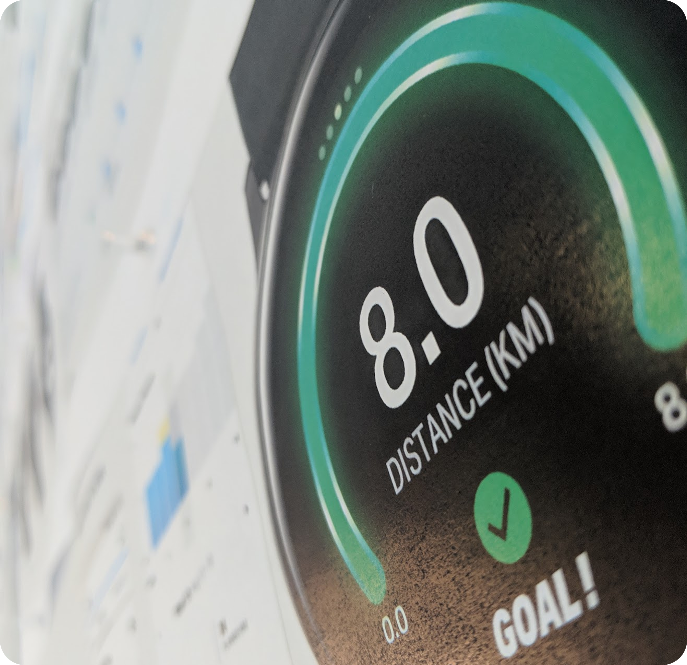
The celebratory goal-complete moment, on-wrist
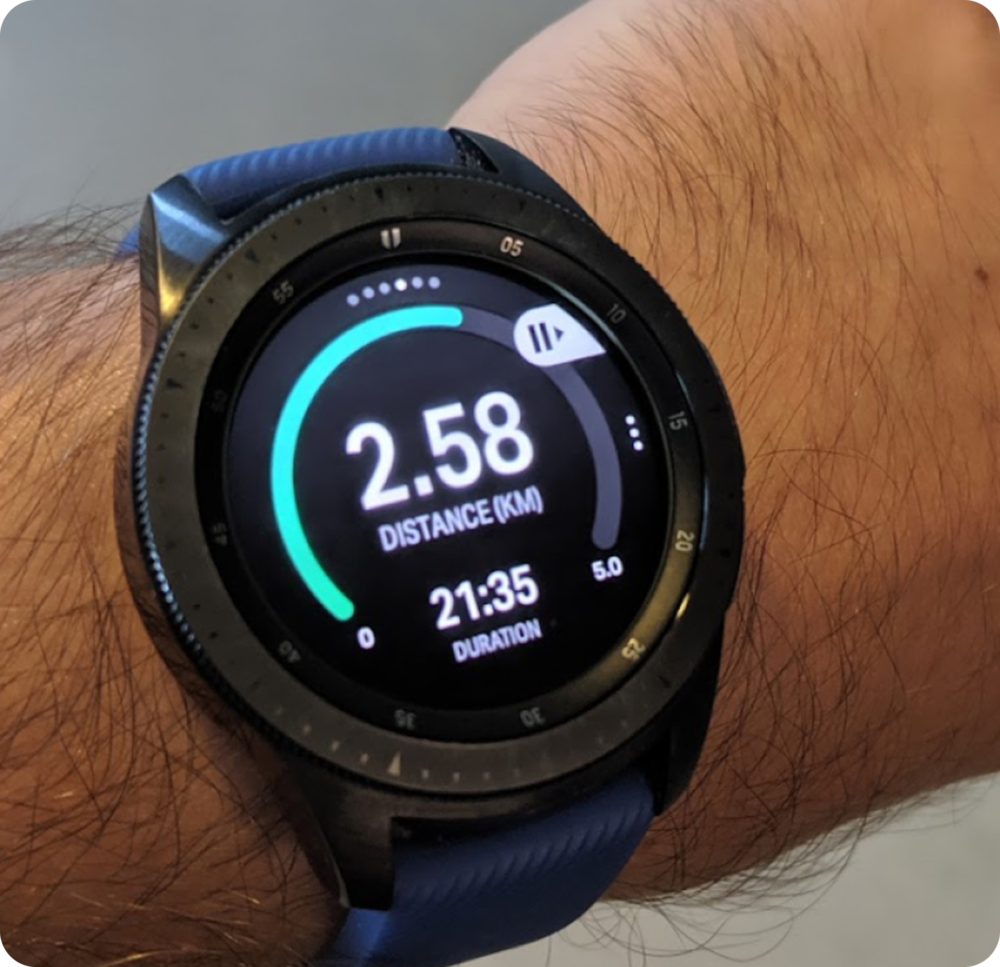
On-wrist — mid-run distance and duration
Marketing the watch
We partnered with noted agency We Are Royale to produce promotional videos and marketing stills for the watch, including the announcement reel shown at the developer conference. I contributed to the art direction, providing UX and UI guidance for on-wrist mockups.
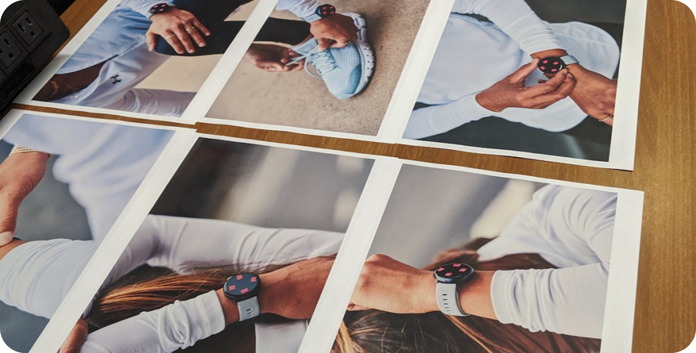
Marketing photography proofs — reviewing on-wrist and lifestyle shots
Form Coaching visual concept — We Are Royale
Final product
The Samsung Galaxy Watch Active2 Under Armour Edition was released in October of 2019, alongside a collection of upgraded wearables by Samsung. In hindsight, releasing competing products simultaneously was a miscalculation — sales, while steady, fell short of expectations despite a high-quality marketing push.
Our Form Coaching feature, on the other hand, was very successful. We quickly ported it onto the mobile app and eventually onto Garmin devices as an optional third-party data screen.
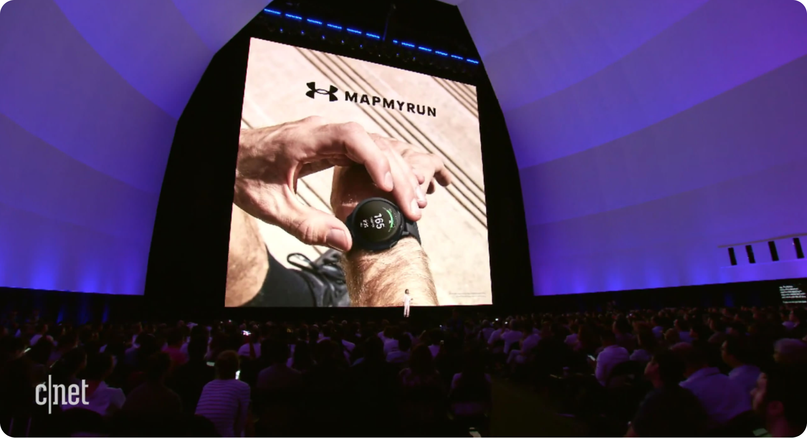
Revealed on stage at Samsung's Unpacked developer conference · via CNET